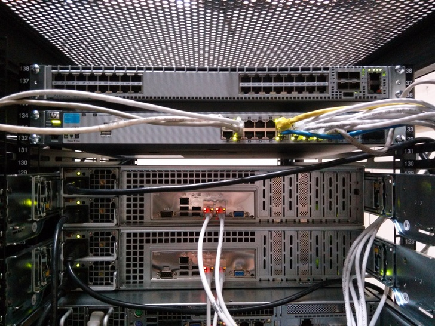

<section>
    <section data-markdown>
        <script type="text/template">
            ## Infrastructure

            

            I know what you're thinking
        </script>
    </section>
    <section data-markdown>
        <script type="text/template">
            ## We build our own

            [Rackservers.com](https://rackservers.com) is like McDonald's!

            <br/>

            - Supermicro-based chassis/boards
            - Intel Sandy Bridge-based Xeons
            - Intel X540 NICs
            - No GPUs

            <br/>
            We've got six machines like this
        </script>
    </section>
    <section data-markdown>
        <script type="text/template">
            ## Computing

            Three compute nodes:

            - 88 cores
            - 500GB RAM

            <br/>
            Nothing to write home about!
        </script>
    </section>
    <section data-markdown>
        <script type="text/template">
            ## Storage

            Three storage nodes:

            - 16GB RAM (each)
            - 8 cores (each)

            <br/>
            Probably overkill, but we can cache (and scale!)
        </script>
    </section>
    <section data-markdown>
        <script type="text/template">
            ## Gluing it all together

            Brand new 10GbE [Arista 7050T](http://www.aristanetworks.com/products/7050series/7050t) (top)

            

            Old HP 1GbE something or other (bottom)
        </script>
    </section>
</section>
